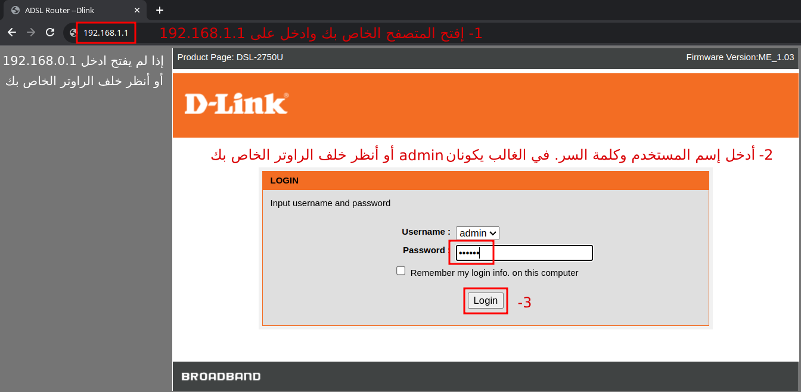
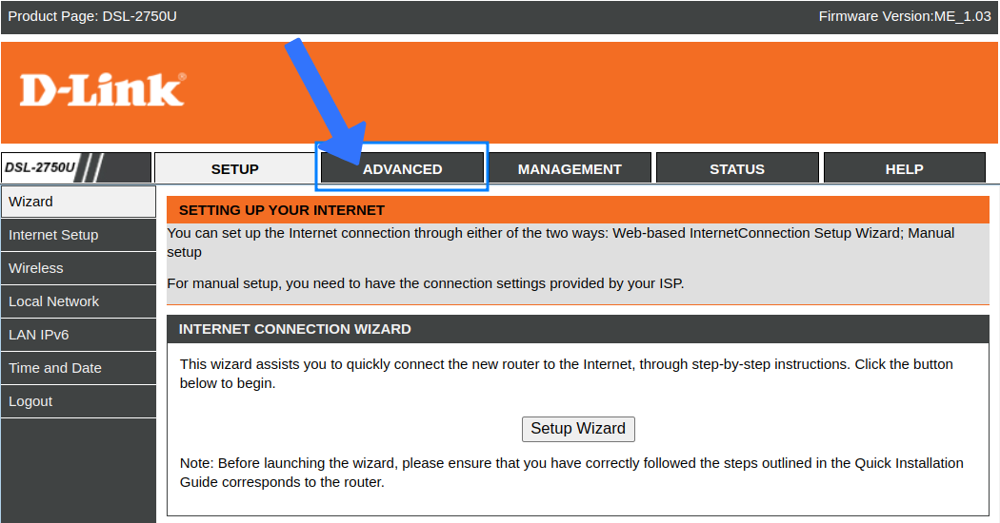
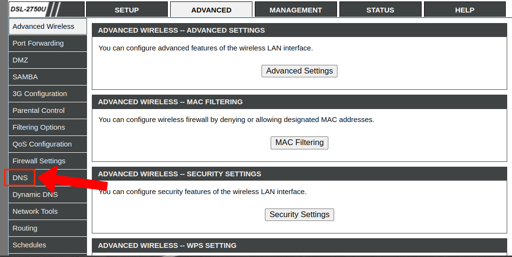
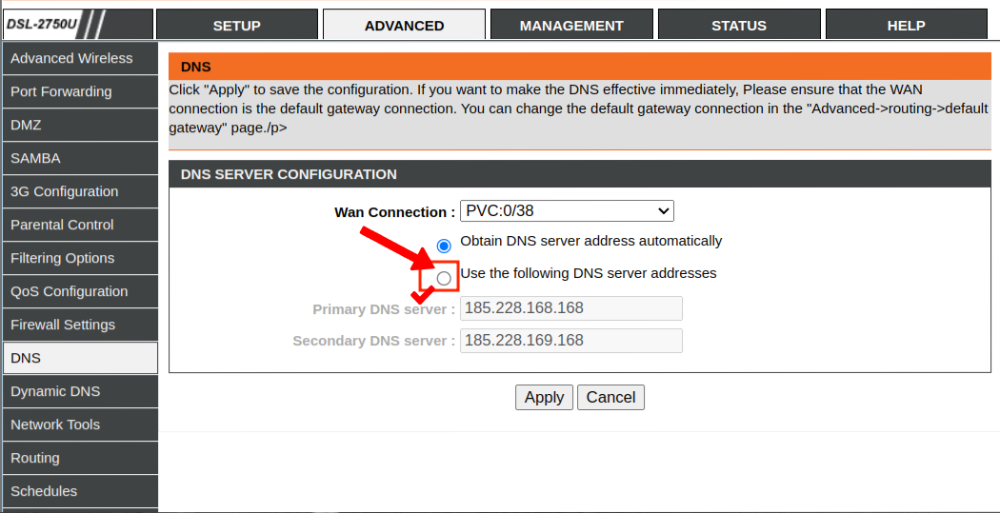
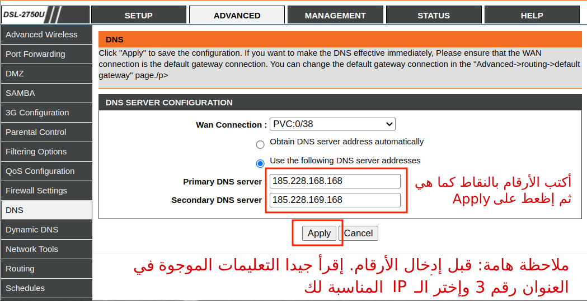
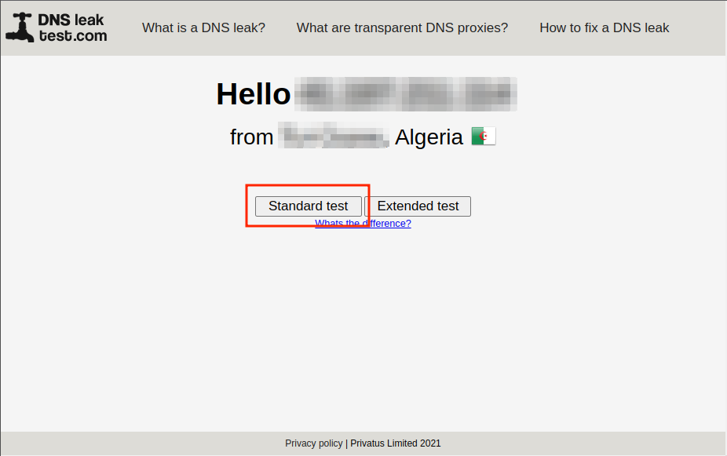
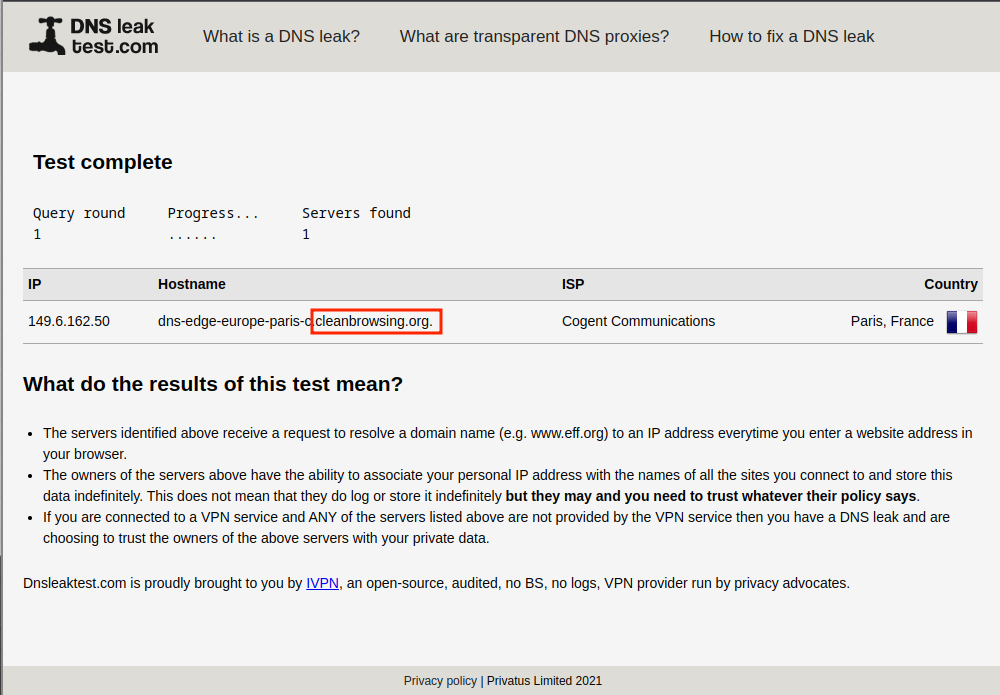

(قُل لِّلْمُؤْمِنِينَ يَغُضُّوا مِنْ أَبْصَارِهِمْ وَيَحْفَظُوا فُرُوجَهُمْ ۚ ذَٰلِكَ أَزْكَىٰ لَهُمْ ۗ إِنَّ اللَّهَ خَبِيرٌ بِمَا يَصْنَعُونَ). [سورة النور، آية: 30]
يمكنك استخدام خدمة DNS Filter مثل CleanBrowsing لمنع الوصول إلى المواقع الإباحية والمخلة، وأيضًا لحظر مواقع أخرى مثل القمار وتورنت والمواقع الغير أمنة.
تقوم خدمة DNS Filter بمعالجة طلبات الإنترنت الخاصة بك وتمنعك من الوصول إلى مواقع غير مناسبة أو ضارة. هذا يساعد في الحفاظ على تجربة تصفح أكثر أمانًا وصديقة للعائلة.
يمكنك تثبيت خدمة DNS Filter على الأجهزة الفردية مثل الهواتف وأجهزة الكمبيوتر المحمولة، أو مباشرة على جهاز الراوتر (Modem) الخاص بك.
| النوع | الميزات |
|---|---|
| الراوتر (Modem) | عند تثبيت DNS Filter على جهاز الراوتر الخاص بك، سينطبق على الشبكة بأكملها. وهذا يحمي جميع الأجهزة المتصلة بشبكة منزلك، مثل أجهزة الألعاب والتلفزيونات الذكية والهواتف وأجهزة الكمبيوتر المحمولة. |
| الأجهزة الفردية | عند تثبيت DNS Filter على الأجهزة الفردية، يتم ضمان الحماية حتى عند استخدامها خارج الشبكة المنزلية. وهذا مهم بشكل خاص للأجهزة المحمولة التي قد تتصل بشبكات مختلفة. |
من المُستحسن تثبيت خدمة DNS Filter على جهاز الراوتر والأجهزة الفردية معا. لأن جهاز الراوتر يوفر التغطية داخل المنزل فقط، وتثبيته على الأجهزة الفردية تحمي أطفالك حتى عندما يكونوا خارج المنزل.
تقدم CleanBrowsing أنواعًا مختلفة من Filters لاحتياجات متنوعة أهمها:
| نوع الفلتر | الميزات | IP |
|---|---|---|
| فلتر العائلة | يحظر الوصول إلى مواقع البالغين والمواد الإباحية والمواقع الصريحة ومواقع المحتوى المختلط مثل Reddit. تم وضع Google و Bing و YouTube إلى الوضع الآمن، وتم حظر المواقع الغير أمنة. |
|
| فلتر البالغين | يحظر الوصول إلى مواقع البالغين والمواد الإباحية والمواقع الصريحة. دون حظر مواقع المحتوى المختلط مثل Reddit. تم وضع Google و Bing و YouTube إلى الوضع الآمن، وتم حظر المواقع الغير أمنة. |
|
هذه الطريقة فعالة وسهلة. فقط يكمن الإختلاف في إعدادات الراوتر (Modem) فكل شركة لها إعدادات خاصة ومختلفة. وفي الصور ادناه سنستعمل Modem من نوع D-Link. إذا كان الراوتر الخاص بك يختلف عن D-Link فقط إبحث عن كيفية تغيير إعدادات الـ DNS (أو الشبكة) الخاصة بنوع الراوتر الخاص بك واتبع الخطوات الباقية.
    للتحقق من نجاح تثبيت DNS Filter يمكنك الذهاب إلى هذا الموقع https://www.dnsleaktest.com
يجب أن يكون ناتج الاختبار مشابهًا للصورة أدناه.
